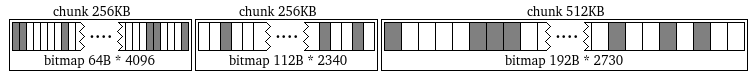
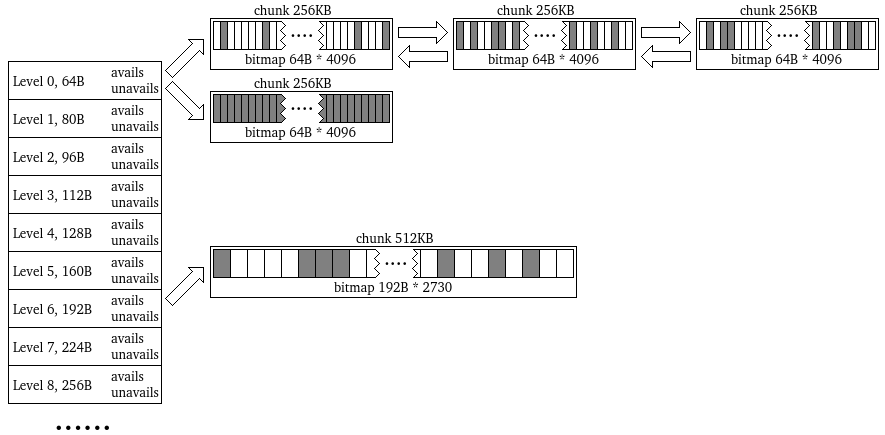
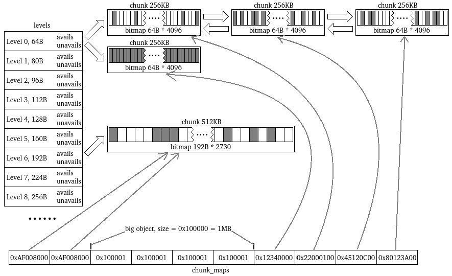
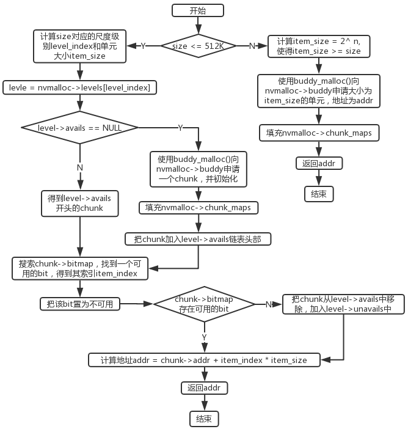
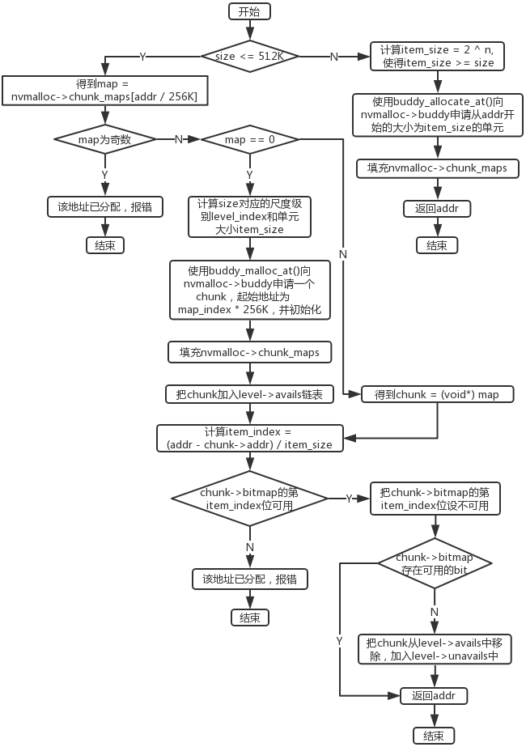
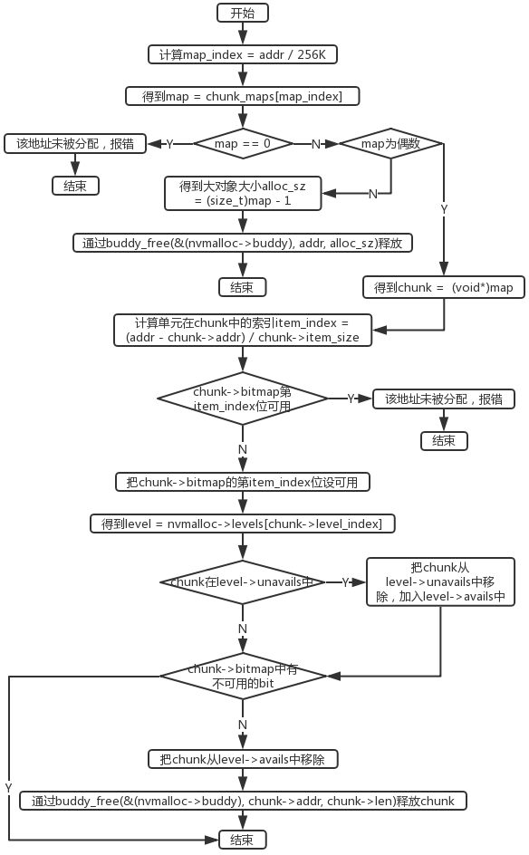

前面几篇《伙伴分配器（buddy allocator）》和《高效通用bitmap（续）——bmp4k》中我分别创造了伙伴分配器和高效的bitmap。目的就是为了这一篇中需要创造的libnvmalloc。这是一个用于NVM（包括一切持久化存储设备）的内存分配器，这个内存分配器相比于传统的用于DRAM的内存分配器，最大的区别在于，其支持形如
int malloc_at(void* addr, size_t size);
这样的操作。该操作用于分配一段内存空间，不仅指定了大小，还指定了起始地址。malloc_at()操作对于DRAM是没有意义的，因为写入其中的数据只有在当前进程中有效，当进程重启后，数据丢失。而malloc_at()操作对于NVM是必须的，因为写入NVM的数据在下一次进程启动时依旧能够访问到，所以必须告诉分配器把空间分配在哪里。事实上，由于NVM是通过mmap()操作动态挂载到虚拟地址空间中的，因此malloc_at()操作中的地址应该是数据相对于NVM硬件开头的偏移量，即：
int nvm_malloc_at(size_t addr, size_t size);
对于NVM的使用，可以用一个小例子阐述。进程启动时，挂载NVM，假设NVM被挂载到了虚拟地址空间中的0x12340000,即：
void* nvm_base = mmap(...); // nvm_base = 0x12340000
然后使用malloc()操作在NVM上分配一段长度为256的空间，得到偏移量是0x2000：
size_t nvm_offset = nvm_malloc(256); // nvm_offset = 0x2000
那么进程中就可以使用一个指向0x12342000的指针来读写NVM上的这段空间：
void* nvm_ptr = (void*)((size_t)nvm_base + nvm_offset); // nvm_ptr = 0x12342000
比如写入一个字符串：
strcpy((char*)nvm_ptr, "hello,world!");
当进程重启后，或者在另一个进程中，虽然NVM可能会被挂载到不同的虚地址空间，但是仍然可以通过malloc_at()操作和之前分配的偏移量0x2000重新访问数据：
void* nvm_base = mmap(...); // nvm_base = 0x45670000
size_t nvm_offset = 0x2000;
int ret = nvm_malloc_at(nvm_offset);
assert(ret);
void* nvm_ptr = (void*)((size_t)nvm_base + nvm_offset); // nvm_ptr = 0x45672000
printf("%s\n", (char*)nvm_ptr); // output: "hello,world!\n"
事实上，即使不使用nvm_malloc_at()，NVM上的数据也可以通过指针直接访问。但是，如果不使用nvm_malloc_at()告诉分配器某某地方存在数据，那么分配器很可能会把该段空间分配出去，从而导致数据被破坏。这就是malloc_at()操作对于libnvmalloc的必要性。另外从上面的示例中可以看到，该分配器处理地址都是逻辑上的偏移量，而不是虚拟地址。
从功能上而言，《伙伴分配器（buddy allocator）》中设计的buddy allocator已经可以提供libnvmalloc需要的完整功能，因为其拥有
// 从buddy中分配一个单元
// buddy: 一个buddy的指针
// size: 单元大小
// 成功返回单元在空间中的偏移量，失败返回BUDDY_ALLOCATE_FAILED。
size_t buddy_allocate(struct buddy* buddy, size_t size);
// 从buddy中分配一个单元
// buddy: 一个buddy的指针
// addr: 单元的起始位置，用单元在空间中的偏移量表示
// size: 单元大小
// 成功返回addr，失败返回BUDDY_ALLOCATE_FAILED。
size_t buddy_allocate_at(struct buddy* buddy, size_t addr, size_t size);
// 释放一个单元回buddy中
// buddy: 一个buddy的指针
// addr: 单元的起始位置，用单元在空间中的偏移量表示
// size: 单元大小
// 成功返回1，失败返回0。
int buddy_free(struct buddy* buddy, size_t addr, size_t size);
这么三个函数。换个名字就成了所要的
// 从管理空间中分配一块空闲区域
// nvmalloc: 一个nvmalloc指针
// size: 分配空间大小
// 成功返回地址，失败返回NVMALLOC_ALLOCATE_FAILED
size_t nvmalloc_malloc(struct nvmalloc* nvmalloc, size_t size);
// 在管理空间的指定位置分配一块区域
// nvmalloc: 一个nvmalloc指针
// addr: 地址
// size: 分配空间大小
// 成功返回地址addr，失败返回NVMALLOC_ALLOCATE_FAILED
size_t nvmalloc_malloc_at(struct nvmalloc* nvmalloc, size_t addr, size_t size);
// 释放分配的空间
// nvmalloc: 一个nvmalloc指针
// addr: 地址
// 成功返回1, 失败返回0
int nvmalloc_free(struct nvmalloc* nvmalloc, size_t addr);
但是，buddy allocator有一个不太理想的特性，就是分配的单元的大小之间必须是2的整数次幂的比例。比如说，最小的分配大小是64字节，那么下一个等级就是128字节，再往下就是256字节，以此类推。这样，在最糟糕的情况下，内存利用率接近50%，因为用户申请2^n+1字节（65, 129, 257, 513...）的空间时，实际分配的是2^(n+1)字节（128, 256, 512, 1024...）的空间。
提高空间利用率的一个好办法就是使用更细粒度的尺寸等级划分。如果可以把尺寸分成如下等级：
- 64
- 80
- 96
- 112
- 128
- 160
- 192
- 224
- 256
- 320
- 384
- 448
- 512
............
那么最糟糕的情况下，空间利用率为80%。因此，为了提高空间利用率，单纯的buddy allocator是不够的。我的设计是：多个小尺寸的对象构成chunk，以chunk为单位向buddy allocator申请空间；而大对象则直接向buddy allocator分配。
大小为512K及以下的对象称作小对象，使用细粒度尺寸划分，其规则如下：
- 对于尺度级别64，向buddy allocator申请256KB的空间，切分成4096个64字节的单元；
- 对于尺度级别80，向buddy allocator申请256KB的空间，切分成3276个80字节的单元；
- 对于尺度级别96，向buddy allocator申请256KB的空间，切分成2730个96字节的单元；
- 对于尺度级别112，向buddy allocator申请256KB的空间，切分成2340个112字节的单元；
- 对于尺度级别128，向buddy allocator申请512KB的空间，切分成4096个128字节的单元；
- 对于尺度级别160，向buddy allocator申请512KB的空间，切分成3276个160字节的单元；
- 对于尺度级别192，向buddy allocator申请512KB的空间，切分成2730个192字节的单元；
- 对于尺度级别224，向buddy allocator申请512KB的空间，切分成2340个224字节的单元；
- 对于尺度级别256，向buddy allocator申请1MB的空间，切分成4096个256字节的单元；
- 对于尺度级别320，向buddy allocator申请1MB的空间，切分成3276个320字节的单元；
- 对于尺度级别384，向buddy allocator申请1MB的空间，切分成2730个384字节的单元；
- 对于尺度级别448，向buddy allocator申请1MB的空间，切分成2340个448字节的单元；
- 对于尺度级别512，向buddy allocator申请2MB的空间，切分成4096个512字节的单元；
- 对于尺度级别1024，向buddy allocator申请4MB的空间，切分成4096个1024字节的单元；
- 对于尺度级别1280，向buddy allocator申请4MB的空间，切分成3276个1280字节的单元；
- 对于尺度级别1536，向buddy allocator申请4MB的空间，切分成2730个1536字节的单元；
- 对于尺度级别1792，向buddy allocator申请4MB的空间，切分成2340个1792字节的单元；
- 对于尺度级别2048，向buddy allocator申请4MB的空间，切分成2048个2048字节的单元；
- 对于尺度级别2560，向buddy allocator申请4MB的空间，切分成1638个2560字节的单元；
- 对于尺度级别3072，向buddy allocator申请4MB的空间，切分成1132个3072字节的单元；
- 对于尺度级别512K，向buddy allocator申请4MB的空间，切分成8个512K字节的单元。
............
............
chunk大小最大为4MB。用bitmap细分chunk的示意图如下：

大小为512K以上的对象称作大对象，直接向buddy allocator申请，而且大小使用2的幂次方增大，即1MB，2MB，4MB，..., 512MB。
对于小对象，一个chunk内部使用bitmap管理，也就是《高效通用bitmap（续）——bmp4k》中的bmp4k。这就是为什么chunk内部最多切4096个单元的原因。一般而言，一个软件系统中，1MB以上的大对象分配操作比较低频，而小对象操作非常频繁。由于bmp4k的操作速度比伙伴系统快很多，因此，这种buddy + bitmap的方式，既做到了空间利用率的提高，又到了性能的提升。
一个chunk使用如下结构体表示：
// 一个用bitmap细分的chunk
struct nvmalloc_chunk
{
// chunk首地址
size_t addr;
// chunk长度
size_t len;
// 尺寸等级
size_t level_index;
// 分配单元大小
size_t item_size;
// 单元的bitmap
struct bmp4k bitmap;
// 前一个chunk
struct nvmalloc_chunk* prev;
// 后一个chunk
struct nvmalloc_chunk* next;
};
比如一个用来管理4096个64字节单元的chunk，通过buddy_allocate()分配得到地址为0x10000000，那么addr字段就是0x10000000，len是256KB，level_index为0，item_size为64。
每一个尺度级别都有两条链表avails和unavails，用如下结构表示：
// 同一个尺寸级别的所有chunk
struct nvmalloc_level
{
// 所有可分配的chunk的双向环
struct nvmalloc_chunk* avails;
// 所有不可分配的chunk的双向环
struct nvmalloc_chunk* unavails;
};
所有使用chunk细分的尺度层级构成如下的结构：

对于某个特定的尺度级别，所有可分配的chunk都在avails指向的双向链表中，所有不可分配（已经全部分配完）的chunk都在unavails指向的双向链表中。
一个完整的nvm分配器的数据结构如下：
// 一个nvmalloc分配器
struct nvmalloc
{
// 伙伴系统
struct buddy buddy;
// 尺寸级别种类
size_t level_count;
// 各个尺寸级别
struct nvmalloc_level* levels;
// chunk归属映射表数量
size_t map_count;
// 由地址快速得到归属chunk
void** chunk_maps;
};
最基础的就是一个buddy allocator。然后有一个名为levels的nvmalloc_level一维数组，最后有一个名为chunk_maps的void*的一维数组。buddy和levels字段已经阐述过了。chunk_maps[i]对应了NVM上[i*256KB， (i+1)*256KB)这么一段空间，描述该段空间的状态。具体含义如下：
- 如果chunk_maps[i]为0，则表明[i*256KB， (i+1)*256KB)这段空间未被使用；
- 如果(size_t)chunk_maps[i]为奇数，则表明[i*256KB， (i+1)*256KB)这段空间被一个大对象占据，对象大小为(size_t)chunk_maps[i] - 1；
- 否则，[i*256KB， (i+1)*256KB)这段空间被分配为一个chunk，chunk_maps[i]是一个指向chunk的指针。
其结构可以用下图示意：

所以每次向buddy allocator申请或释放空间时，都需要填充chunk_maps数组。
对于
// 从管理空间中分配一块空闲区域
// nvmalloc: 一个nvmalloc指针
// size: 分配空间大小
// 成功返回地址，失败返回NVMALLOC_ALLOCATE_FAILED
size_t nvmalloc_malloc(struct nvmalloc* nvmalloc, size_t size);
步骤如下：
- 如果size <= 512KB，跳至步骤4;
- 计算最小item_size，使得item_size是2的整数次幂，且item_size >= size;
- 返回buddy_allocate(&(nvmalloc->buddy), item_size)；
- 计算size对应的尺度级别，得到level_index和item_size；
- 得到level_index指向的level；
- 如果level->avails不为空，跳至步骤9；
- 向buddy allocator申请一个chunk，并初始化；
- 把chunk加入level->avails链表；
- 得到level->avails开头的chunk；
- 搜索chunk->bitmap找到一个可用的bit，得到其索引item_index；
- 把该bit至为不可用；
- 如果chunk->bitmap不存在可用的bit，则把chunk从level->avails中移除，加入level->unavails中；
- 计算分配的地址addr = chunk->addr + item_index * item_size；
- 返回addr。

对于
// 在管理空间的指定位置分配一块区域
// nvmalloc: 一个nvmalloc指针
// addr: 地址
// size: 分配空间大小
// 成功返回地址addr，失败返回NVMALLOC_ALLOCATE_FAILED
size_t malloc_at(size_t addr, size_t size);
单纯使用上述的数据结构还不能胜任。为此我引入额外的数据结构——chunk_maps。对于malloc_at操作，步骤如下：
- 如果size <= 512KB，跳至步骤4;
- 计算最小item_size，使得item_size是2的整数次幂，且item_size >= size;
- 返回buddy_allocate_at(&(nvmalloc->buddy), addr, item_size)；
- 计算map_index = addr / 256KB;
- 如果chunk_maps[map_index]为奇数，表明已被分配，返回错误；
- 如果chunk_maps[map_index]不为0，则chunk = chunk_maps[map_index]，跳至步骤10；
- 计算size对应的尺度级别，得到level_index和item_size；
- 向buddy allocator申请一个chunk，并初始化；
- 把chunk加入level->avails链表；
- 计算item_index = (addr - chunk->addr) / item_size;
- 如果chunk->bitmap的第item_index位不可用，表明已被分配，返回错误；
- 把chunk->bitmap的第item_index位设不可用；
- 如果chunk->bitmap不存在可用的bit，则把chunk从level->avails中移除，加入level->unavails中；
- 分配成功，返回1。

对于
// 释放分配的空间
// nvmalloc: 一个nvmalloc指针
// addr: 地址
// 成功返回1, 失败返回0
int nvmalloc_free(struct nvmalloc* nvmalloc, size_t addr);
步骤如下：
- 计算map_index = addr / 256KB;
- 如果chunk_maps[map_index]为0，表明未被分配，返回错误；
- 如果chunk_maps[map_index]为偶数，跳至步骤6；
- 得到大对象大小alloc_sz = chunk_maps[map_index] - 1；
- 通过buddy_free(&(nvmalloc->buddy), addr, alloc_sz)释放，返回；
- 得到chunk = chunk_maps[map_index]；
- 计算item_index = (addr - chunk->addr) / chunk->item_size;
- 如果chunk->bitmap的第item_index位可用，表明未被分配，返回错误；
- 把chunk->bitmap的第item_index位设可用；
- 得到level = nvmalloc->levels[chunk->level_index]；
- 如果chunk在level->unavails中，把chunk从level->unavails中移除，加入level->avails中；
- 如果chunk->bitmap中还有不可用的bit，则跳至步骤15；
- 通过buddy_free(&(nvmalloc->buddy), chunk->addr, chunk->len)归还空间;
- 把chunk从level->avails中移除，释放chunk；
- 释放成功，返回1。

nvmalloc.h
#ifndef NVMALLOC_H
#define NVMALLOC_H
#include <buddy.h>
#include <bmp4k.h>
#include <stdlib.h>
// 最小分配单元
#define NVMALLOC_MIN_ITEM_SIZE 64
// 最大分配单元
#define NVMALLOC_MAX_ITEM_SIZE (512<<20) //512M
// 使用bitmap细分的最大单元
#define NVMALLOC_MAX_BMP_ITEM_SIZE (512<<10) //512K
// 使用bitmap细分的最小chunk
#define NVMALLOC_MIN_BMP_CHUNK_SIZE (NVMALLOC_MIN_ITEM_SIZE * 4096) //256K
// 使用bitmap细分的最大chunk
#define NVMALLOC_MAX_BMP_CHUNK_SIZE (4<<20) //4M
// 最小分配单元步长
#define NVMALLOC_MIN_ITEM_SIZE_DELTA 16
// 分配失败时的返回值
#define NVMALLOC_ALLOCATE_FAILED ((size_t)(-1))
// 一个用bitmap细分的chunk
struct nvmalloc_chunk
{
// chunk首地址
size_t addr;
// chunk长度
size_t len;
// 尺寸等级
size_t level_index;
// 分配单元大小
size_t item_size;
// 单元的bitmap
struct bmp4k bitmap;
// 前一个chunk
struct nvmalloc_chunk* prev;
// 后一个chunk
struct nvmalloc_chunk* next;
};
// 同一个尺寸级别的所有chunk
struct nvmalloc_level
{
// 所有可分配的chunk的双向环
struct nvmalloc_chunk* avails;
// 所有不可分配的chunk的双向环
struct nvmalloc_chunk* unavails;
};
// 一个nvmalloc分配器
struct nvmalloc
{
// 伙伴系统
struct buddy buddy;
// 尺寸级别种类
size_t level_count;
// 各个尺寸级别
struct nvmalloc_level* levels;
// chunk归属映射表数量
size_t map_count;
// 由地址快速得到归属chunk
void** chunk_maps;
};
// 初始化nvmalloc
// nvmalloc: 一个nvmalloc指针
// capacity: 管理的空间大小
// 成功返回1, 失败返回0
size_t nvmalloc_init(struct nvmalloc* nvmalloc, size_t capacity);
// 销毁一个nvmalloc（但不负责struct nvmalloc本身的释放）
// nvmalloc: 一个nvmalloc指针
// 成功返回1, 失败返回0
int nvmalloc_deinit(struct nvmalloc* nvmalloc);
// 从管理空间中分配一块空闲区域
// nvmalloc: 一个nvmalloc指针
// size: 分配空间大小
// 成功返回地址，失败返回NVMALLOC_ALLOCATE_FAILED
size_t nvmalloc_malloc(struct nvmalloc* nvmalloc, size_t size);
// 在管理空间的指定位置分配一块区域
// nvmalloc: 一个nvmalloc指针
// addr: 地址
// size: 分配空间大小
// 成功返回地址addr，失败返回NVMALLOC_ALLOCATE_FAILED
size_t nvmalloc_malloc_at(struct nvmalloc* nvmalloc, size_t addr, size_t size);
// 释放分配的空间
// nvmalloc: 一个nvmalloc指针
// addr: 地址
// 成功返回1, 失败返回0
int nvmalloc_free(struct nvmalloc* nvmalloc, size_t addr);
// 获取分配的可用空间大小
// nvmalloc: 一个nvmalloc指针
// addr: 地址
// 成功返回大小，失败返回0
size_t nvmalloc_usable_size(struct nvmalloc* nvmalloc, size_t addr);
#endif
nvmalloc.c
#include <common.h>
#include <string.h>
#include <nvmalloc.h>
// 计算n是2的几次方。如果n不是2的自然数幂，那么返回(size_t)(-1)
static size_t to_power(size_t n)
{
size_t power;
for(power = 0; n >> (power + 1); power++);
if((1 << power) != n)
return (size_t)(-1);
return power;
}
size_t nvmalloc_init(struct nvmalloc* nvmalloc, size_t capacity)
{
assert(nvmalloc);
size_t min_power = to_power(NVMALLOC_MIN_ITEM_SIZE);
assert(min_power != (size_t)(-1));
size_t max_power = to_power(NVMALLOC_MAX_ITEM_SIZE);
assert(max_power != (size_t)(-1));
size_t bmp_max_power = to_power(NVMALLOC_MAX_BMP_ITEM_SIZE);
assert(bmp_max_power != (size_t)(-1));
assert(min_power <= bmp_max_power && bmp_max_power <= max_power);
size_t min_chunk_power = to_power(NVMALLOC_MIN_BMP_CHUNK_SIZE);
assert(min_chunk_power != (size_t)(-1));
size_t max_chunk_power = to_power(NVMALLOC_MAX_BMP_CHUNK_SIZE);
assert(max_chunk_power != (size_t)(-1));
assert(min_chunk_power <= max_chunk_power && max_chunk_power <= max_power);
size_t min_item_delta_power = to_power(NVMALLOC_MIN_ITEM_SIZE_DELTA);
assert(min_item_delta_power != (size_t)(-1));
assert(min_item_delta_power <= min_power);
nvmalloc->level_count = (bmp_max_power - min_power) * (NVMALLOC_MIN_ITEM_SIZE / NVMALLOC_MIN_ITEM_SIZE_DELTA) + 1;
nvmalloc->levels = malloc(sizeof(struct nvmalloc_level) * nvmalloc->level_count);
if(!nvmalloc->levels)
ERROR(0, 1, "malloc(sizeof(struct nvmalloc_level) * %lu) failed!", nvmalloc->level_count);
memset(nvmalloc->levels, 0, sizeof(struct nvmalloc_level) * nvmalloc->level_count);
nvmalloc->map_count = capacity / NVMALLOC_MIN_BMP_CHUNK_SIZE;
nvmalloc->chunk_maps = malloc(sizeof(void*) * nvmalloc->map_count);
if(!nvmalloc->chunk_maps)
ERROR(0, 1, "malloc(sizeof(void*) * %lu) failed!", nvmalloc->map_count);
memset(nvmalloc->chunk_maps, 0, sizeof(void*) * nvmalloc->map_count);
int ret = buddy_init(&(nvmalloc->buddy), capacity, NVMALLOC_MIN_BMP_CHUNK_SIZE, NVMALLOC_MAX_ITEM_SIZE);
if(!ret)
ERROR(0, 0, "buddy_init(&(nvmalloc->buddy), %lu, %d, %d) failed!", capacity, NVMALLOC_MIN_BMP_CHUNK_SIZE, NVMALLOC_MAX_ITEM_SIZE);
return 1;
}
int nvmalloc_deinit(struct nvmalloc* nvmalloc)
{
assert(nvmalloc);
if(!buddy_deinit(&(nvmalloc->buddy)))
ERROR(0, 0, "buddy_deinit(&(nvmalloc->buddy)) failed!");
for(size_t i = 0; i < nvmalloc->level_count; i++)
{
struct nvmalloc_chunk* chunk = nvmalloc->levels[i].avails;
while(chunk)
{
struct nvmalloc_chunk* next = chunk->next;
free(chunk);
chunk = next;
}
chunk = nvmalloc->levels[i].unavails;
while(chunk)
{
struct nvmalloc_chunk* next = chunk->next;
free(chunk);
chunk = next;
}
}
free(nvmalloc->levels);
free(nvmalloc->chunk_maps);
return 1;
}
// 把大小变成chunk等级和分配单元大小
#define PARSE_SIZE(size, level, item_size) \
do \
{ \
if((size) <= NVMALLOC_MIN_ITEM_SIZE) \
{ \
(level) = 0; \
(item_size) = NVMALLOC_MIN_ITEM_SIZE; \
break; \
} \
size_t _step = 0; \
while(((size_t)NVMALLOC_MIN_ITEM_SIZE << (_step + 1)) - 1 < (size)) \
_step++; \
size_t _base = ((size_t)NVMALLOC_MIN_ITEM_SIZE << _step); \
assert(_base <= (size)); \
size_t _delta = (size_t)NVMALLOC_MIN_ITEM_SIZE_DELTA << _step; \
size_t _index = ((size) - _base + _delta - 1) / _delta; \
(level) = _step * (NVMALLOC_MIN_ITEM_SIZE / NVMALLOC_MIN_ITEM_SIZE_DELTA) + _index; \
(item_size) = _base + _index * _delta; \
} \
while(0)
// 给nvmalloc->chunk_maps标记
#define MARK_CHUNK_MAPS(nvmalloc, addr, len, mark) \
do \
{ \
assert((addr) % NVMALLOC_MIN_BMP_CHUNK_SIZE == 0); \
size_t _map_index = (addr) / NVMALLOC_MIN_BMP_CHUNK_SIZE; \
assert((len) % NVMALLOC_MIN_BMP_CHUNK_SIZE == 0); \
size_t _map_count = (len) / NVMALLOC_MIN_BMP_CHUNK_SIZE; \
assert(_map_count); \
assert(_map_index + _map_count <= (nvmalloc)->map_count); \
for(size_t _i = 0; _i < _map_count; _i++) \
(nvmalloc)->chunk_maps[_map_index + _i] = (void*)(mark); \
} \
while(0)
#define min(a, b) ((a) < (b) ? (a) : (b))
// 计算n的最大倍数x且x<=max
#define MULTI_FLOOR(n, max) ((size_t)((max) / (n)) * (n))
// 根据分配单元大小计算chunk大小
#define CHUNK_SIZE(item_size) \
({ \
size_t _upper = min((item_size) * 4096, NVMALLOC_MAX_BMP_CHUNK_SIZE); \
size_t _shift = 0; \
while((NVMALLOC_MIN_BMP_CHUNK_SIZE << (_shift + 1)) > _upper) \
_shift++; \
NVMALLOC_MIN_BMP_CHUNK_SIZE << _shift; \
})
// 分配一个chunk
#define ALLOCATE_CHUNK(nvmalloc, chunk, _addr, _len, _level_index, _item_size, fail_ret) \
do \
{ \
(chunk) = malloc(sizeof(struct nvmalloc_chunk)); \
if(!(chunk)) \
ERROR((fail_ret), 1, "malloc(sizeof(struct nvmalloc_chunk) failed!"); \
(chunk)->addr = (_addr); \
(chunk)->len = (_len); \
(chunk)->level_index = (_level_index); \
(chunk)->item_size = (_item_size); \
int _ret = bmp4k_init(&((chunk)->bitmap), (_len) / (_item_size), 1); \
assert(_ret); \
assert((size_t)(chunk) % 2 == 0); \
MARK_CHUNK_MAPS((nvmalloc), (_addr), (_len), (chunk)); \
} \
while(0)
// 把chunk从链表移除
#define REMOVE_CHUNK_FROM_LIST(list, chunk) \
do \
{ \
if((chunk)->prev) \
(chunk)->prev->next = (chunk)->next; \
if((chunk)->next) \
(chunk)->next->prev = (chunk)->prev; \
if((*(list)) == (chunk)) \
(*(list)) = (chunk)->next; \
} \
while(0)
// 把chunk放入链表头部
#define ADD_CHUNK_TO_HEAD(list, chunk) \
do \
{ \
(chunk)->next = (*(list)); \
if((chunk)->next) \
(chunk)->next->prev = (chunk); \
(*(list)) = (chunk); \
(chunk)->prev = 0; \
} \
while(0)
// 如果chunk已经全部分配完，则从level->avals头部取出，放入level->unavals头部
#define MOVE_TO_UNAVAIL_IF_NEED(chunk, level) \
do \
{ \
if(!bmp4k_exist(&((chunk)->bitmap), 1)) \
{ \
REMOVE_CHUNK_FROM_LIST(&((level)->avails), chunk); \
ADD_CHUNK_TO_HEAD(&((level)->unavails), chunk); \
} \
} \
while(0)
size_t nvmalloc_malloc(struct nvmalloc* nvmalloc, size_t size)
{
assert(nvmalloc);
if(size > NVMALLOC_MAX_BMP_ITEM_SIZE)
{
size_t alloc_sz = NVMALLOC_MAX_BMP_ITEM_SIZE * 2;
while(alloc_sz < size)
alloc_sz *= 2;
size_t addr = buddy_allocate(&(nvmalloc->buddy), alloc_sz);
if(addr == BUDDY_ALLOCATE_FAILED)
ERROR(NVMALLOC_ALLOCATE_FAILED, 0, "buddy_allocate(&(nvmalloc->buddy), %lu) failed!", alloc_sz);
MARK_CHUNK_MAPS(nvmalloc, addr, alloc_sz, alloc_sz + 1);
return addr;
}
size_t level_index, item_size;
PARSE_SIZE(size, level_index, item_size);
assert(level_index < nvmalloc->level_count);
struct nvmalloc_level* level = nvmalloc->levels + level_index;
if(!level->avails)
{
size_t chunk_sz = CHUNK_SIZE(item_size);
size_t addr = buddy_allocate(&(nvmalloc->buddy), chunk_sz);
if(addr == BUDDY_ALLOCATE_FAILED)
ERROR(NVMALLOC_ALLOCATE_FAILED, 0, "buddy_allocate(&(nvmalloc->buddy), %lu) failed!", chunk_sz);
struct nvmalloc_chunk* chunk;
ALLOCATE_CHUNK(nvmalloc, chunk, addr, chunk_sz, level_index, item_size, NVMALLOC_ALLOCATE_FAILED);
ADD_CHUNK_TO_HEAD(&(level->avails), chunk);
}
struct nvmalloc_chunk* chunk = level->avails;
assert(chunk);
assert(chunk->level_index == level_index);
assert(chunk->item_size == item_size);
size_t item_index = bmp4k_search(&(chunk->bitmap), 1);
assert(item_index != BMP4K_NOT_FOUND);
int ret = bmp4k_set(&(chunk->bitmap), item_index, 0);
assert(ret);
size_t alloc_addr = chunk->addr + item_index * item_size;
MOVE_TO_UNAVAIL_IF_NEED(chunk, level);
return alloc_addr;
}
#define MAP_ADDR_TO_CHUNK(nvmalloc, addr, chunk, fail_ret) \
do \
{ \
size_t _map_index = (addr) / NVMALLOC_MIN_BMP_CHUNK_SIZE; \
if(_map_index >= (nvmalloc)->map_count) \
ERROR((fail_ret), 0, "param <%s = %lu> is out of range!", #addr, (addr)); \
(chunk) = (nvmalloc)->chunk_maps[_map_index]; \
} \
while(0)
size_t nvmalloc_malloc_at(struct nvmalloc* nvmalloc, size_t addr, size_t size)
{
assert(nvmalloc);
if(size > NVMALLOC_MAX_BMP_ITEM_SIZE)
{
size_t alloc_sz = NVMALLOC_MAX_BMP_ITEM_SIZE * 2;
while(alloc_sz < size)
alloc_sz *= 2;
if(addr % alloc_sz)
ERROR(NVMALLOC_ALLOCATE_FAILED, 0, "param <addr = %lu> is not aligned by <alloc_sz = %lu>!", addr, alloc_sz);
if(buddy_allocate_at(&(nvmalloc->buddy), addr, alloc_sz) == BUDDY_ALLOCATE_FAILED)
ERROR(NVMALLOC_ALLOCATE_FAILED, 0, "buddy_allocate_at(&(nvmalloc->buddy), %lu, %lu) failed!", addr, alloc_sz);
MARK_CHUNK_MAPS(nvmalloc, addr, alloc_sz, alloc_sz + 1);
return addr;
}
struct nvmalloc_chunk* chunk;
MAP_ADDR_TO_CHUNK(nvmalloc, addr, chunk, NVMALLOC_ALLOCATE_FAILED);
if((size_t)chunk % 2)
ERROR(NVMALLOC_ALLOCATE_FAILED, 0, "param <addr = %lu> has been allocated to size %lu!", addr, (size_t)chunk - 1);
size_t level_index, item_size;
PARSE_SIZE(size, level_index, item_size);
assert(level_index < nvmalloc->level_count);
struct nvmalloc_level* level = nvmalloc->levels + level_index;
if(!chunk)
{
size_t chunk_sz = CHUNK_SIZE(item_size);
size_t chunk_addr = MULTI_FLOOR(chunk_sz, addr);
size_t item_index = (addr - chunk_addr) / item_size;
if(addr != chunk_addr + item_index * item_size)
ERROR(NVMALLOC_ALLOCATE_FAILED, 0, "param <addr = %lu> is not aligned by item size %lu!", addr, item_size);
if(buddy_allocate_at(&(nvmalloc->buddy), chunk_addr, chunk_sz) == BUDDY_ALLOCATE_FAILED)
ERROR(NVMALLOC_ALLOCATE_FAILED, 0, "buddy_allocate_at(&(nvmalloc->buddy), %lu, %lu) failed!", chunk_addr, chunk_sz);
ALLOCATE_CHUNK(nvmalloc, chunk, chunk_addr, chunk_sz, level_index, item_size, NVMALLOC_ALLOCATE_FAILED);
ADD_CHUNK_TO_HEAD(&(level->avails), chunk);
}
else if(chunk->item_size != item_size)
ERROR(NVMALLOC_ALLOCATE_FAILED, 0, "param <addr = %lu> has been allocated to size %lu!", addr, chunk->item_size);
assert(chunk);
assert(chunk->level_index == level_index);
assert(chunk->item_size == item_size);
size_t item_index = (addr - chunk->addr) / item_size;
if(addr != chunk->addr + item_index * item_size)
ERROR(NVMALLOC_ALLOCATE_FAILED, 0, "param <addr = %lu> is not aligned by item size %lu!", addr, item_size);
if(bmp4k_get(&(chunk->bitmap), item_index) != 1)
ERROR(NVMALLOC_ALLOCATE_FAILED, 0, "object(<addr = %lu>, <size = %lu>) has been allocated!", addr, item_size);
int ret = bmp4k_set(&(chunk->bitmap), item_index, 0);
assert(ret);
MOVE_TO_UNAVAIL_IF_NEED(chunk, level);
return addr;
}
#define GET_ALLOCATED_ITEM_INDEX(chunk, _addr, item_index, fail_ret) \
do \
{ \
if(!(chunk)) \
ERROR((fail_ret), 0, "param <%s = %lu> has not been allocated!", #_addr, (_addr)); \
assert((chunk)->item_size); \
(item_index) = ((_addr) - (chunk)->addr) / (chunk)->item_size; \
if((_addr) != (chunk)->addr + (item_index) * (chunk)->item_size) \
ERROR((fail_ret), 0, "param <%s = %lu> is not aligned by item size %lu!", #_addr, (addr), (chunk)->item_size); \
if(bmp4k_get(&((chunk)->bitmap), (item_index)) != 0) \
ERROR((fail_ret), 0, "object(<addr = %lu>, <item_size = %lu>) has not been allocated!", (_addr), (chunk)->item_size); \
} \
while(0)
int nvmalloc_free(struct nvmalloc* nvmalloc, size_t addr)
{
assert(nvmalloc);
struct nvmalloc_chunk* chunk;
MAP_ADDR_TO_CHUNK(nvmalloc, addr, chunk, 0);
if((size_t)chunk % 2)
{
size_t alloc_sz = (size_t)chunk - 1;
assert(to_power(alloc_sz) != (size_t)(-1));
if(addr % alloc_sz)
ERROR(0, 0, "param <addr = %lu> is not aligned by <alloc_sz = %lu>!", addr, alloc_sz);
if(!buddy_free(&(nvmalloc->buddy), addr, (size_t)chunk - 1))
ERROR(0, 0, "buddy_free(&(nvmalloc->buddy), %lu, %lu) failed!", addr, (size_t)chunk - 1);
return 1;
}
size_t item_index;
GET_ALLOCATED_ITEM_INDEX(chunk, addr, item_index, 0);
int was_unavail = !bmp4k_exist(&(chunk->bitmap), 1);
int ret = bmp4k_set(&(chunk->bitmap), item_index, 1);
assert(ret);
struct nvmalloc_level* level = nvmalloc->levels + chunk->level_index;
if(!bmp4k_exist(&(chunk->bitmap), 0))
{
if(!buddy_free(&(nvmalloc->buddy), chunk->addr, chunk->len))
ERROR(0, 0, "buddy_free(&(nvmalloc->buddy), %lu, %lu) failed!", chunk->addr, chunk->len);
MARK_CHUNK_MAPS((nvmalloc), chunk->addr, chunk->len, 0);
REMOVE_CHUNK_FROM_LIST(was_unavail ? &((level)->unavails) : &((level)->avails), chunk);
free(chunk);
return 1;
}
if(was_unavail)
{
REMOVE_CHUNK_FROM_LIST(&((level)->unavails), chunk);
ADD_CHUNK_TO_HEAD(&((level)->avails), chunk);
}
return 1;
}
size_t nvmalloc_usable_size(struct nvmalloc* nvmalloc, size_t addr)
{
assert(nvmalloc);
struct nvmalloc_chunk* chunk;
MAP_ADDR_TO_CHUNK(nvmalloc, addr, chunk, 0);
if((size_t)chunk % 2)
{
size_t alloc_sz = (size_t)chunk - 1;
assert(to_power(alloc_sz) != (size_t)(-1));
if(addr % alloc_sz)
ERROR(0, 0, "param <addr = %lu> is not aligned by <alloc_sz = %lu>!", addr, alloc_sz);
return alloc_sz;
}
size_t item_index;
GET_ALLOCATED_ITEM_INDEX(chunk, addr, item_index, 0);
return chunk->item_size;
}
把common.h、avl.h、avl.c、buddy.h、buddy.c、bmp4k.h、bmp4k.c、nvmalloc.h、nvmalloc.c放在一起，然后写一个测试用例：
#include <common.h>
#include <nvmalloc.h>
int main()
{
struct nvmalloc nvm;
int ret;
size_t addr;
size_t size;
ret = nvmalloc_init(&nvm, (size_t)1<<40);
assert(ret);
for(size_t i = 0; i < 100000000; i++)
{
addr = nvmalloc_malloc_at(&nvm, i<<6, 1<<6);
assert(addr != NVMALLOC_ALLOCATE_FAILED);
}
for(size_t i = 0; i < 1000000000; i++)
{
ret = nvmalloc_free(&nvm, i<<6);
assert(ret);
}
ret = nvmalloc_deinit(&nvm);
assert(ret);
return 0;
}
gcc -std=gnu99 *.c -o nvmalloc_test -I. -O3
关闭assert，开启-O3优化，在Intel(R) Core(TM) i5-2450M CPU @ 2.50GHz的笔记本上，测试性能如下：
| 尺寸 | malloc | malloc_at | free |
|---|---|---|---|
| 64 | 62.06ns | 27.79ns | 34.75ns |
| 128 | 75.06ns | 38.30ns | 31.89ns |
| 256 | 75.62ns | 41.35ns | 31.67ns |
| 512 | 76.68ns | 41.12ns | 33.65ns |
| 1K | 77.26ns | 43.32ns | 30.12ns |
| 2K | 77.52ns | 44.02ns | 34.72ns |
| 4K | 78.47ns | 45.23ns | 36.08ns |
| 8K | 75.03ns | 45.41ns | 38.36ns |
| 16K | 63.13ns | 47.68ns | 37.49ns |
| 32K | 57.98ns | 50.40ns | 35.98ns |
| 64K | 65.06ns | 56.24ns | 37.00ns |
| 128K | 65.12ns | 70.06ns | 34.74ns |
| 256K | 75.25ns | 75.17ns | 29.85ns |
| 512K | 80.13ns | 85.42ns | 30.12ns |